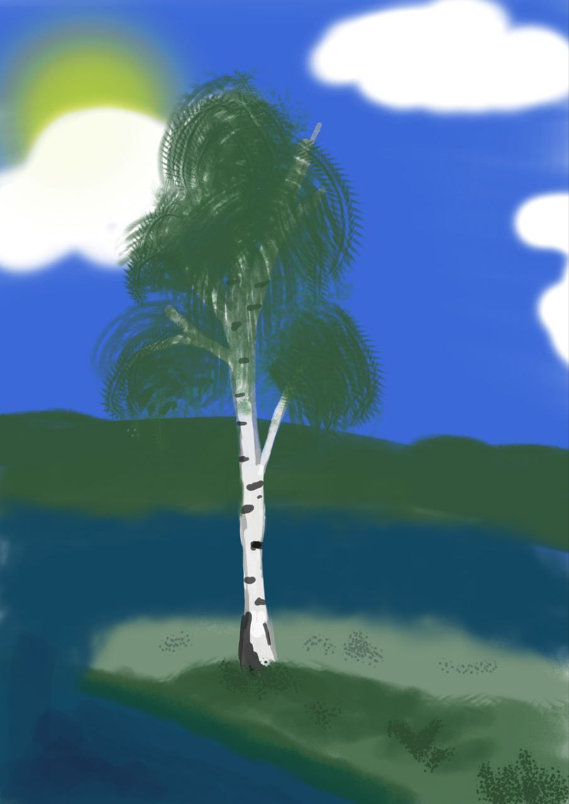

Береза
Береза є однією з найпоширеніших листяних порід на Вінниччині, яку легко впізнати за її характерною білою корою. Ця характерна кора містить бетулін — смолисту сполуку, що відповідає за білий колір і захисні властивості дерева. Берези можуть досягати значної висоти — від 30 до 45 метрів, а також мають тривалий термін життя, часто доживаючи до 100-120 років. Завдяки своїй граційній зовнішності та стійкості, берези є важливим елементом лісових екосистем регіону, роблячи внесок як у його красу, так і в біорізноманіття.